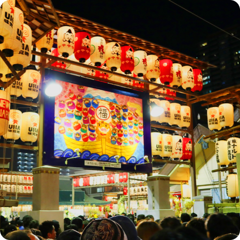

당신의 특별한 오사카 여행을 보다 편하게 누릴 수 있도록.
당신의 특별한 오사카 여행을 보다 편하게 누릴 수 있도록.
오사카에서 일어나는 재밌는 축제, 특별한 특산물, 맛있는 먹거리를 알아볼까요?
오사카의 다양한 즐거움을 느낄 수 있는 축제를 만끽하세요!
|  | 도카 에비스 축제 기한 : 매년 1월 10일 도카 에비스 축제는 대나무 가지를 흔들며 상업의 신 에비스에게 새해 재물운을 기원하는 축제입니다. 상인의 도시인 오사카에서 가장 중요하게 여기는 축제중 하나인 도카 에비스 축제에서는 시내의 근로자들이 이마미야에비스 신사에 모여 상업의 신인 에비스에게 공물을 바치고 기원을 올립니다. |
| 오사카 텐진 마쓰리 기한 : 6월말 ~ 7월 25일 오사카 텐진 마쓰리는 교토, 도쿄와 함께 일본의 3대 마쓰리로 잘 알려져있습니다. '스이조타키기노', '호코나가시 신지', '갸루 미코시', '이치반 다이코' 등.. 행사기간내에 다양한 이벤트가 진행되며 불꽃놀이와 맛있는 음식들은 흥을 돋웁니다. 축제 마지막날 하이라이트로 펼쳐지는 신을 모신 가마 미코시를 선착장까지 육로로 운반하는 ‘리쿠토교’와 신령을 배에 태워 모시는 ‘후나토교’ 를 꼭 관람하세요! |
오사카에서 특별하게 생산되는 오사카 특산물을 만나보세요!
| 오사카 곤고 대나무 발 대나무 발은 흔한 제품같지만, 오사카 곤고의 대나무 발은 다릅니다! 헤이안 시대때부터 유명했던 오사카의 대나무발은 황궁 내부나 귀족의 저택에서 주로 쓰였습니다. 그중에서도 오사카 곤고산의 고급 대나무가 가장 품질이 좋다고 알려져있습니다. |
|
| 사카이 날붙이 사카이 하모노. 일명 사카이 날붙이는 사카이,오사카 지방에서 망치로 두드려 만든 칼을 말합니다. 대장장이가 전통적인 기법을 이용해서 만들어서 튼튼하며 가장자리 모양이 아름다워 높은 평가를 받고있습니다. |
오사카에서 시작된 맛있는 즐거움을 체험해보세요!
| 타코야끼 타코야끼는 문어 조각과 여러 재료를 |
이와 오코시 이와 오코시는 좁쌀과 설탕으로 만들어낸 |
||
| 키츠네 우동 키츠네 우동은 메이지 시기 오사카의 우동집 |
오코노미야끼 오코노미야끼는 잘게썬 양배추, 밀가루, 달걀, 육수를 이용해 반죽한 일본식 부침개입니다. |